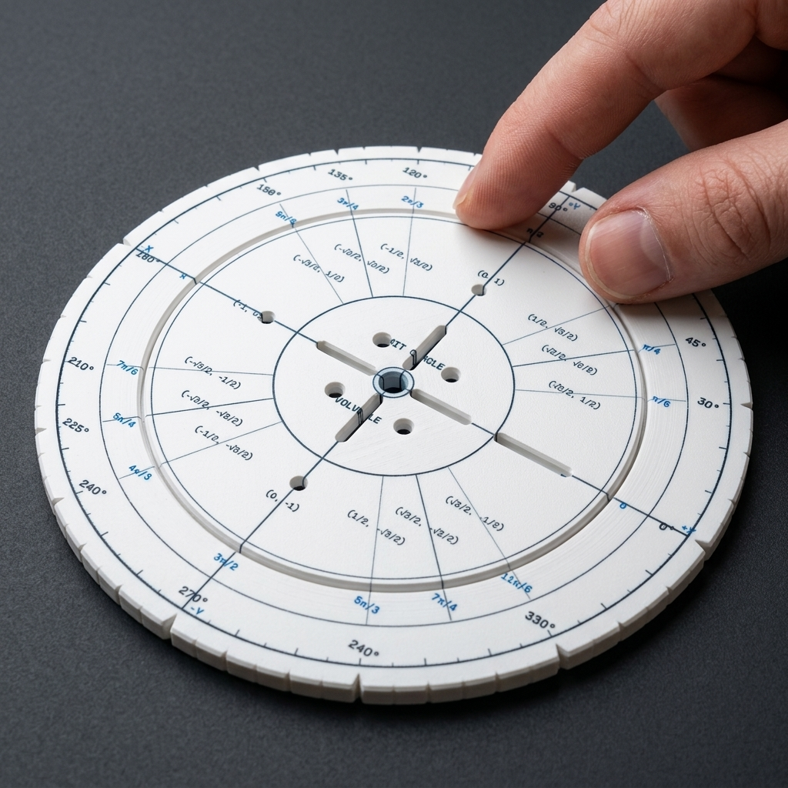
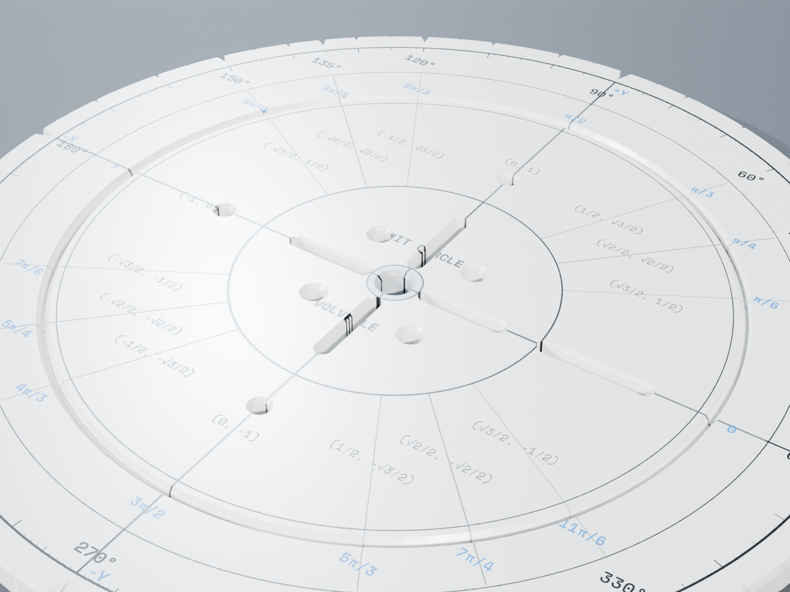
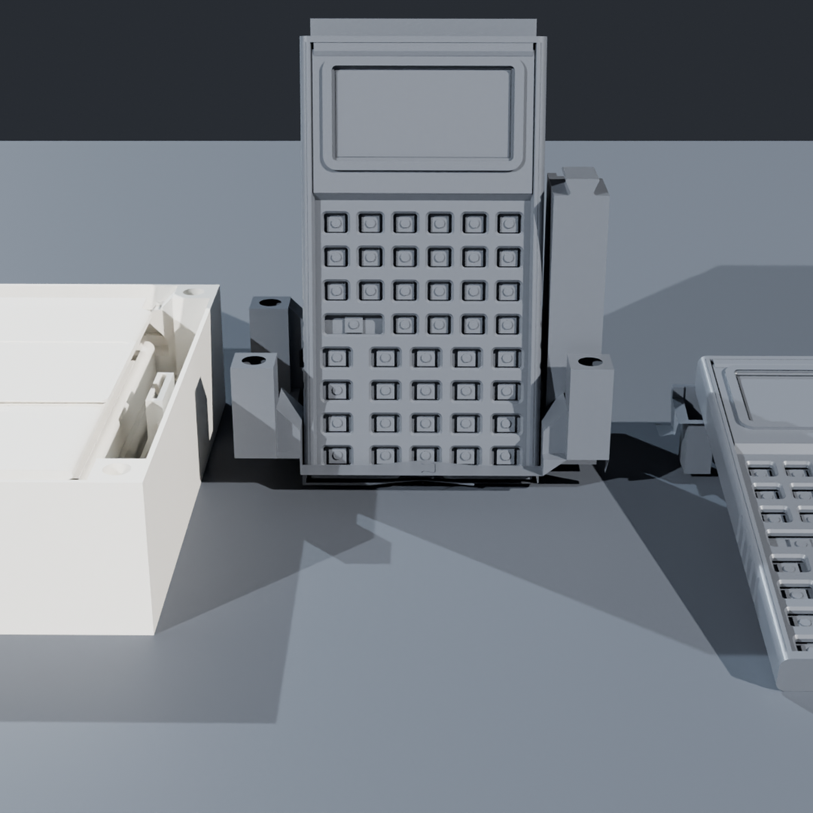
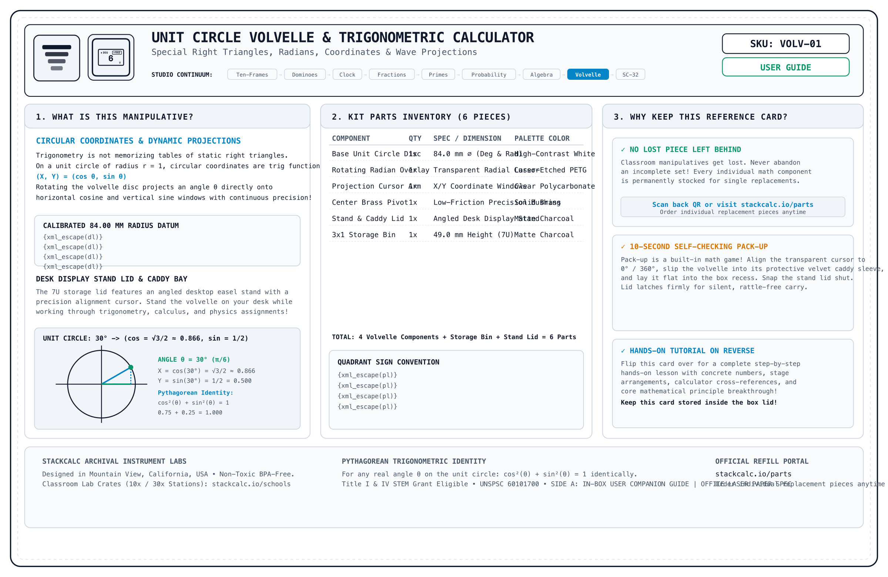
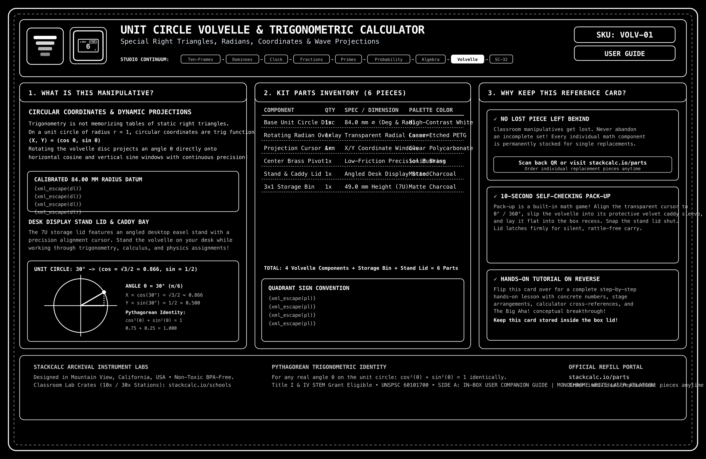
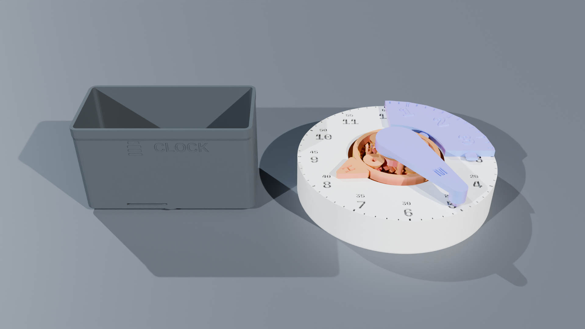

Unit Circle Trigonometry Volvelle
The tactile, zero-battery circular mathematical instrument for trigonometry and physics. Two concentric rotating discs made of laser-engraved matte polymer reveal exact radian/degree conversions and \((x, y, \sin \theta, \cos \theta, \tan \theta)\) coordinates through precision aperture windows. Completely flat desk profile with a flush center eyelet.
A Tactile Mechanical Trigonometric Resolver
Memorizing the 16 key points of the unit circle causes needless anxiety. The Volvelle makes circular angles and coordinate signs physically tangible.
1. Radian to Degree Synchronization
Align the top disc to any angle (such as \(150^\circ\)). The inner dial instantly displays the exact fractional radian equivalent (\(\frac{5\pi}{6}\)), teaching students to see radians as arc lengths.
2. Exact Coordinate Pairs
The window isolates the exact cartesian coordinate \(\left(-\frac{\sqrt{3}}{2}, \frac{1}{2}\right)\). Signs automatically conform to Quadrant II rules, eliminating negative sign errors.
3. Tangent & Reciprocal Ratios
The outer perimeter ring catalogs tangent, secant, and cosecant ratios alongside undefined asymptotes at \(\frac{\pi}{2}\) and \(\frac{3\pi}{2}\).
The Video Showcase: Mechanical Animation, Unboxing & Classroom Lesson
Experience the complete journey from dual-rotor CAD trigonometry kinematics and zero-plastic unboxing to exact radical coordinate reading on a study desk.
Rotary CAD Kinematics
Concentric disc alignment showing laser-etched degree/radian arcs, brass eyelet pivot retention, and viewing aperture tolerances.
Aperture Coordinate Alignment (30°)
Rotating rotor disc to 30° (π/6) to reveal exact radical coordinate pair (cosθ, sinθ) = (√3/2, 1/2) without memorization tables.
Tangent Slope & Undefined Asymptote
Rotating to 90° (π/2) where coordinate is (0, 1): demonstrates tan(90°) = 1/0 is an undefined vertical slope, explaining asymptotes concretely.

Archival Reference & Video QR Card (135×90mm)
Included inside every shipment. Scan Side B to jump straight to this 3-video learning portal or inspect Side A for part replacement IDs.
From the Teacher's Manual: Unit Lab Sheet
Most traditional math teacher manuals treat manipulatives as optional afterthoughts. In the StackCalc curriculum, every manipulative unit includes a dedicated, reproducible lab sheet connecting hands-on tactile geometry directly to hardware calculator execution.
Lab 12: Rotary Coordinate Transformations & RPN Trigonometry Verification
Investigation Goal: Transform radian arc rotations into exact cartesian coordinate pairs \((x, y) = (\cos\theta, \sin\theta)\) across all four quadrants. Verify exact radical identities and Pythagorean relations (\(\sin^2\theta + \cos^2\theta = 1\)) using the SC-32 RPN stack.
Rotate the top disc on its flush brass eyelet pivot. Align the cursor window with standard benchmark angles. Observe how the aperture isolates exact coordinate pairs and sign transitions:
| Angle (θ) | Radian Measure | Exact Cosine (x) | Exact Sine (y) | Exact Tangent (y/x) |
|---|---|---|---|---|
| \(30^\circ\) | \(\frac{\pi}{6}\) | \(\frac{\sqrt{3}}{2}\) | \(\frac{1}{2}\) | \(\frac{\sqrt{3}}{3}\) |
| \(120^\circ\) | \(\frac{2\pi}{3}\) | \(-\frac{1}{2}\) | \(\frac{\sqrt{3}}{2}\) | \(-\sqrt{3}\) |
| \(225^\circ\) | \(\frac{5\pi}{4}\) | \(-\frac{\sqrt{2}}{2}\) | \(-\frac{\sqrt{2}}{2}\) | \(1\) |
Verify the exact radical coordinates of \(\theta = 120^\circ\) and test the fundamental identity \(\sin^2\theta + \cos^2\theta = 1\) on the SC-32 RPN stack:
Build a Complete Hands-On Trigonometry Station
Pair rotary unit circle geometry with instant RPN trigonometric execution in degree and radian modes.

SC-32 Scientific RPN Maker Kit
Equipped with dedicated `SIN`, `COS`, `TAN`, `ASIN`, `ACOS`, `ATAN`, and radian/degree conversion keys. Evaluates trig functions instantly on the RPN stack without parentheses.

36-Page Spiral Student Workbook
Features 4 advanced trigonometry investigations: unit circle coordinates, Pythagorean identities, tangent asymptotes, and harmonic wave oscillations with full teacher solutions.

Classroom Sectional Clock
Physical 12:1 planetary gear clock with removable 15-minute quadrant sectors. Connects rotational angle to time intervals and trigonometry.
Technical Specifications
Physical dimensions and manufacturing tolerances.
| Outer Diameter | 90.0 mm diameter circular disc • Fits inside standard notebook pockets |
| Profile Thickness | 2.4 mm total thickness (Dual 1.2 mm discs) • Completely flat with zero central protrusion |
| Center Pivot | Ultra-low profile brass flush eyelet • Smooth 360° rotation with continuous friction holding |
| Markings | Laser-etched high-contrast vector typography • Scratch-resistant matte surface |
| Material | Engineered micro-grain matte polymer disc • Anti-glare classroom finish |
| Industrial Design & CMF | Precision dual-layer rotary instrument • Flush brass pivot grommet • High-contrast optical readouts • Ultra-thin <3 mm profile for notebook storage |
| Curriculum Standards | Common Core: CCSS.MATH.CONTENT.HSF.TF.A.1, HSF.TF.A.2, HSF.TF.A.3, HSF.TF.C.8 • TEKS: 111.42.c.2 • Precalculus & Trigonometry |
| Procurement Classification | UNSPSC: 60101700 (Math Manipulatives) • NIGP: 785-70 • Title IV STEM & AP Math Grant Eligible |
What's in the Box
Precision analog trigonometry tool ready for your notebook.
Safety, Compliance & Guarantees
Precision rotary instruments built for years of student exploration.
WARNING: CHOKING HAZARD – Small parts (central pivot grommet). Not for children under 3 years. Intended for Grades 8+ (ages 13 and up) in trigonometry, pre-calculus, and physics classrooms.
Crafted from 100% recyclable shatter-resistant PETG biopolymer and heavy archival cardstock. Free from BPA, plasticizers, and toxic coatings.
If a student or learner steps on or damages a volvelle dial, contact us anytime under our Anti-Heartbreak lifetime guarantee for a replacement disk or brass pivot hardware for just $2.49 with free envelope shipping.
Provides pure physical geometric relationship visualization. Ideal for classroom proofs, homework stations, and tactile spatial mastery without screens.
Pedagogical Verification & Classroom Architecture
Concentric aperture kinematics, sign tracking across quadrants, and planar notebook integration.
Concentric Dual-Disc Volvelle
Rotating apertures reveal exact radian/degree conversions and \((x, y, \sin \theta, \cos \theta, \tan \theta)\) coordinate pairs while masking irrelevant data to prevent sensory cognitive overload.
Flush Brass Eyelet Core
Low-profile eyelet allows the dial to lay completely flat inside student notebooks and binders without creating pocket bulges, paper creases, or disc distortion.
Zero-Battery Passive Instrument
Completely non-electronic analog reference tool. Zero RF emission, zero memory storage, and fully compliant for proctored STEM laboratory assessments.
Frequently Asked Questions
Aperture alignments, backpack portability, and exam rules.
Does the volvelle reveal both degrees and radian multiples of pi? +
Yes. As you rotate the dial across all 16 special angles (0°, 30°, 45°, 60°, 90°, etc.), precision optical windows simultaneously reveal the exact degree measurement and radian fractional value (\(\pi/6, \pi/4, \pi/3, \pi/2\)).
Are exact radical coordinate values shown? +
Yes! The aperture cutouts show exact radical roots: \((1/2, \sqrt{3}/2)\), \((\sqrt{2}/2, \sqrt{2}/2)\), and tangent values including exact slopes and "undefined" asymptotes at 90° and 270°.
How durable is the rotating dial? +
The volvelle is crafted from shatterproof, impact-resistant PETG biopolymer fastened with a flush-pressed industrial brass eyelet. Under our "Anti-Heartbreak" lifetime guarantee, if a student bends or tears the dial, we replace it for just $2.49 with free envelope shipping.
Laser Cut or 3D Print Your Own Volvelle
Download our exact SVG vector cut sheets for laser cutters, or STL files for dual-extrusion 3D printers.
The Unit Circle Volvelle builds instant geometric intuition for trigonometric ratios. When students solve complex vectors and differential equations, they transition effortlessly to the dedicated trig stack functions on our SC-32 scientific calculator.